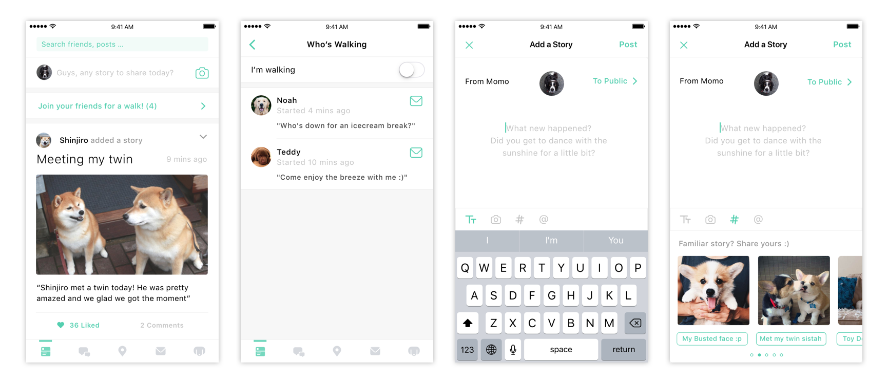
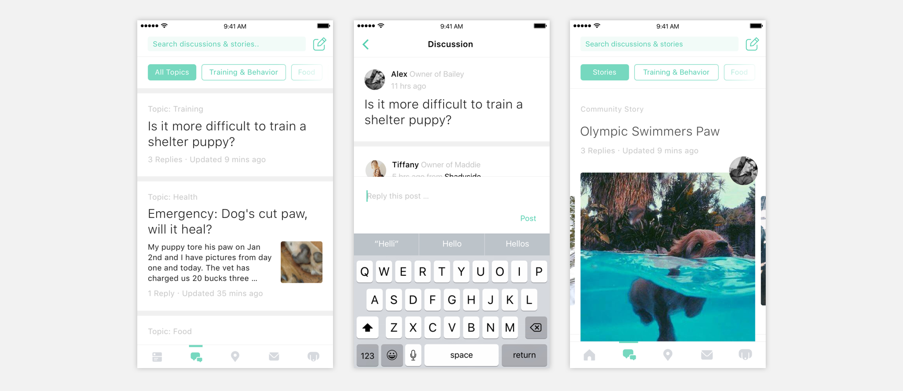

A community network tool designed for neighboring dog owners and dog lovers.
Along with Chris Liu, we concepted a social network tool centered around dogs to build a trusted local neighboring community by helping local neighbors meet, foster and build meaningful connections with each other with the motivations to (a) construct a strong supporting system as pet owners and (b) expanding their social circle as neighbors.

Initial Problem:
A 400B market ready to be tackled.
$400 Billions a year, yet 2M dogs a year have depression attributed to lack of social interaction. After coming cross these numbers, we started the research with “What do you do about your dogs when you are away?” In the course of 2 months, we chatted with more than 40 dogs owners and dog lovers, and collected data from more than 120 pet owners to learn about their pains points & behaviiors. We also studied existing products, and learned that the current pet sitting service could be very expensive, yet it really fails in providing the trust layer as most dog owners view their dogs as their families.

Learnings from the first round of research:
I1. Pet sitting is a problem least stressful for experienced dog owners who have a strong "supporting system".
Most reliable & comfortable: The organic relationship of trading pet sitting duties among friends: "I'm lucky to have a circuit of friendswith whom we trade pet sitting duties when one of us is out of town"
Easily accessfamily/friends who enjoy taking care of dogs: "I leave my dogs to my families or my friends who really enjoy spending time with my dogs." "My dog only get along with people"
Breakdowns: Supporting system might not be working all the time when you only have a few supports.
I2. Pet sitting is a much more severe problem for newly became dog owners and newly moved dog owners.
"Pet hotels kinda became my option""I have to find sitters through Rover, it's fine when it's for a few hours yet I get really anxious if I really have to leave her overnight"
I3. New owners & newly moved owners face more problems than just pet sitting
Reframe the problem:
Instead of difficulty in pet sitting, what's really missing is a trusted supporting system.
We initially thought a potential solution for pet sitting should be quickly match people with the right sitters, yet our research tells us that trust can't be built overnight and what dog owners need is a reliable supporting system. We also decided to put the design focus on newly became pet owners and newly moved dog owners, as they are the people who need the most help.
Dig deeper into stakeholders' values & Needs:
How to build such a supporting system?
How do experienced dog owners build their supporting system? What are their expectations for their friends? Who are they friends with? Why do they trust these people? We started answering these questions by asking what dog owners' current supporting circle like. Here are what we heard: "Easy to access", "Some Petting Experience","Someone I can trust and be friends with.", "Someone who geniunely cares about my dog and my dogs also like".
Newly moved and newly become dog owners have shared social needs
During our research, we also learned that people who newly became pet owners have the new identity as a pet owner, and they will feel more empathetic and more related to other pet owners. They feel the need to have more pet owner friends to share the experience and learn to become a better pet owner. For pet sitter who recently moved to a new area, they feel the needs to expand their current social network and get more faimilair with the new environment. Given the identity as a pet owner, it's a good way to start expanding the social network. In addition, since most of the dog owners would expect their dogs to be mentally healthy, providing opportunities for their dogs to interact with other dogs has also became part of their needs.

Opportunity Space:
Build a local community centered around dogs to provide a chance for people to develop meaningful relationships with their neighbors.
If we could connect local dog owners and have them become friends, will that solve the problem After we learned about our stakeholders’ values, we discovered that other than the motivation of finding a pet sitter, there are more potential benefits for pet owners to expand their local connections with other owners. From here, we saw an opportunity to connect local pet owners and foster friendship among them as neighbors and also potentially have them form the supporting circle

Solutions:
Help dog owners to meet others & expand their social circle.
We had a lot of questions such as with whom do they become friends with? What's difficult about it? Which ones do they want to be friends with? And presented. However, we recognized that the main barrier for dog owners to make connections is the difficulty of making commitment to meet. To help them overcome this specific barrier, we designed our final solution that aims to construct meaningful relationship between local owners.
Prototyping key touch points:
"Meeting & Stay Connected"
From our research learnings, we decided that all these touch points have to happen in a manner that is Light-weight, effortless and organic to lower the barrier of entry, yet interesting enough for dog owners to be able to attend.
Touch point 1: Meeting
Potential Ideation: online, offline meeting

Touch point 2: prolong the relationship
Potential Ideation:promoted content, event, walk together...

Key Final Decisions, for now.
After 3 rounds of user testings, and millions of times of changing in information architecture, we decided to make a mobile app with these final design decisions incorporated.

1. Onboarding: "Welcome to SOMA petzone!"
How can we have petbors feel like home?
2. Create the meeting point: "Saturday morning, let's go do something"
How can we have petbors meet, naturally?

3. Emphasize the community dynamic: Sharing experience through discussion Forum
How can we build the dynamic of a community?
4. Strengthen the network: Encouraging content posting + Take A Walk
How can we make sure petbors who met will continue the conversation?
5. Strenthening your network: Host your own event based on event suggestions
How can we prompt petbors to actually become friends?
6. Asking for help: "SOS! Gone for the weekend."
How can we solve the petting problem, with trust?
Iterations, iterations, iterations.
Building with users from Macro to Micro.
Design is never finished and we are still in the current process of revisiting everything. During the design process, we stayed close to our users so we designed with them. We changed our ideas many times based on our user’s feedback and worked on the information archtecture millions of times to make sure everything is more straightforward. Here are some key iterations we made for some features.
I. Proile pages

II. Event Detailed Page
III. Explore Event Cards